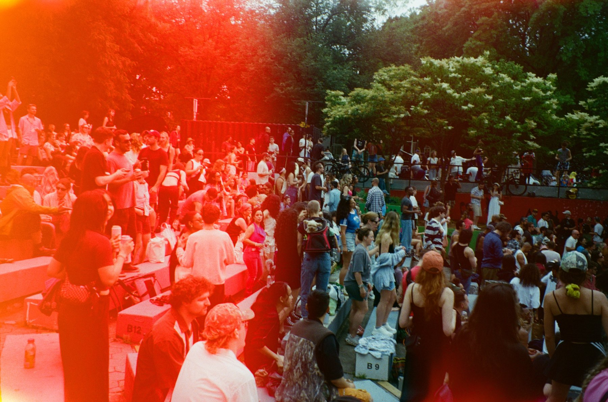

Ahora en · Nueva York
Arte, cultura local y lo que se aprende al escuchar a quienes habitan cada lugar.
La ruta

Cultura local · [Lugar]
[Una o dos líneas que inviten a leer.]
[N] min de lectura →
꩜
Prácticas de yoga grabadas en el camino. El cuerpo como primera lengua.
໑
Lenguaje simbólico, para quien lee entre líneas.
𖦹